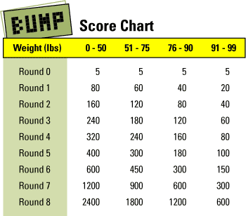

PLACEHOLDER
Tamagotchi Connection (2024) Growth and Character Chart
credits: u/Cicade_Next @ r/tamagotchi
Sleep chart
credits: u/Brookeus @ r/tamagotchi
Bump guide
credits: 72ppi @ tamatalk.com
The amount of influence you have over winning a round of Bump depends on your Tamagotchi's weight.
If your Tamagotchi is very heavy, the more likely you are to win, whereas the lighter your tamagotchi,
the more your success comes down to the luck of the draw.
Weight divisions:

General tips:
- When it asks you to 'PUSH', hit any button twice - you'll get the hang of how quickly to do it to get a full bar.
- Getting a full bar won't guarantee a win and an empty bar won't guarantee a loss either. The only thing that will guarantee a loss is if you don't push a button when you're asked to.
- It's very unlikely that you'll get to finish Round 8 of the lightest weight division (it's like flipping a coin 8 times and getting all heads) so try to win a heavier weight division instead.
- To put on weight simply feed your tamagotchi a lot of food and keep checking the health meter to see how many pounds (lbs) it's up to.